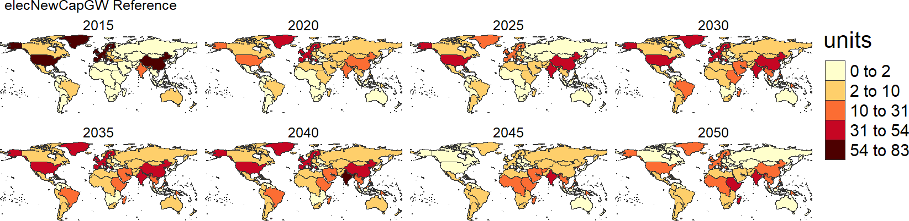

Read GCAM Data and Calculate Electricity Investment
plutus::gcamInvest integrates the functionality of reading CGAM data and calculating stranded assets and electricity investments in power sector in one place. This function will return a list containing:
- data: a dataframe with the original data
- dataAggParam: a dataframe with the data aggregated to the parameter
- dataAggClass1: a dataframe with the data aggregated to class 1
- dataAggclass2: a dataframe with the data aggregated to class 2
- scenarios: A list of the scenarios
- queries: A list of the queries used to extract the data
The details of arguments and their default values in plutus::gcamInvest can be found in the gcamInvest reference page. The following sections provide step-by-step instructions on using plutus::gcamInvest.
# Default argument values
plutus::gcamInvest(gcamdatabase = NULL,
queryFile = NULL,
reReadData = T,
dataProjFile = paste(getwd(), "/outputs/dataProj.proj", sep = ""),
gcamdataFile = NULL,
scenOrigNames = 'All',
scenNewNames = NULL,
regionsSelect = NULL,
dirOutputs = paste(getwd(), "/outputs", sep = ""),
folderName = NULL,
nameAppend = "",
saveData = T)Read Project File
plutus::gcamInvest is able to read .proj file from GCAM output by providing the path to the rgcam-based .proj file. Plutus also includes an example .proj dataset plutus::exampleGCAMproj.
library(plutus)
invest <- plutus::gcamInvest(# dataProjFile = path_to_projfile,
dataProjFile = plutus::exampleGCAMproj)
# Explore the list returned from plutus::gcamInvest
df <- invest$data; df
dfParam <- invest$dataAggParam; dfParam
dfClass1 <- invest$dataAggClass1; dfClass1
dfScenario <- invest$scenarios; dfScenario
dfQuery <- invest$queries; dfQueryRead GCAM Database
plutus::gcamInvest can directly read GCAM database. Assign the path of GCAM database to gcamdatabase argument.
library(plutus)
# provide path to the desired GCAM database folder.
path_to_gcamdatabase <- 'E:/gcam-core-gcam-v5.3/output/databse_basexdb'
invest <- plutus::gcamInvest(gcamdatabase = path_to_gcamdatabase)Read and Subset GCAM Data
plutus::gcamInvest provides options to subset GCAM data by scenario and region.
library(plutus)
invest <- plutus::gcamInvest(dataProjFile = plutus::exampleGCAMproj,
scenOrigNames = c('Reference', 'Impacts', 'Policy'),
scenNewNames = c('Reference', 'Climate Impacts', 'Climate Policy'),
regionsSelect = c('USA', 'Argentina'))
df <- invest$data; df
dfParam <- invest$dataAggParam; dfParam
dfClass1 <- invest$dataAggClass1; dfClass1Input Data and Assumptions
Plutus provides default data and assumptions from GCAM v5.3, which can be found in Your-GCAM-5.3-Folder/input/gcamdata/. All CSV files associated with different data categories and assumptions are listed in Table 1.
Table 1: Data and assumption files.
| Data or Assumption | Technology | Region | Data File |
|---|---|---|---|
| Overnight capital costs | Electricity generation technologies | Global | L2233.GlobalIntTechCapital_elec.csv L2233.GlobalTechCapital_elecPassthru.csv |
| Overnight capital costs | Cooling technologies | Global | L2233.GlobalIntTechCapital_elec_cool.csv L2233.GlobalTechCapital_elec_cool.csv |
| Capacity factors | Electricity generation technologies | Global | L223.GlobalTechCapFac_elec.csv |
| Capacity factors | Intermittant technologies | Regional | L223.StubTechCapFactor_elec.csv |
| Lifetime and steepness | Electricity generation technologies | Global | A23.globaltech_retirement.csv |
plutus::gcamInvest allows users to input their own data associated with their GCAM runs. Users can update values in any CSV file. Please keep the file name and the format of each updated file unchanged. To input your own data, specify the path to the folder that contains all CSV files listed in Table 1 in the gcamdataFile argument.
library(plutus)
invest <- plutus::gcamInvest(dataProjFile = plutus::exampleGCAMproj,
gcamdataFile = 'E:/gcam-core-gcam-v5.3/input/gcamdata')Output Options
plutus::gcamInvest automatically saves outputs, such as .proj files, queries, and output data tables in default path based on the working directory. This section will introduce arguments in plutus::gcamInvest that controls different output options.
Re-read Data
plutus::gcamInvest automatically save a copy of .proj file (default name: dataProj.proj) in the output directory after extracting GCAM output data if provided a GCAM database folder using gcamdatabase argument. Reload the same (subsetted) GCAM dataset can be much faster by using the automatically save dataProj.proj file. Users can choose to turnoff auto save function by specifying argument to reReadData = F.
library(plutus)
path_to_gcamdatabase <- 'E:/gcam-core-gcam-v5.3/output/databse_basexdb'
invest <- plutus::gcamInvest(gcamdatabase = path_to_gcamdatabase,
reReadData = F) # Default is reReadData = TOutput Directory
It is easy to change output folder names and names appended to the output data tables.
-
folderNamecreates a folder with the specified name under output directory -
nameAppendappends the specified string at the end of each output data table file
library(plutus)
invest <- plutus::gcamInvest(dataProjFile = plutus::exampleGCAMproj,
# dirOutputs = Your-desired-output-path, # Default is paste(getwd(), "/outputs", sep = "")
folderName = 'USA', # Default is fodlerName = NULL
nameAppend = '_Invest') # Default is nameAppend = ''You can also choose not to save any output by setting argument to saveData = F.
library(plutus)
invest <- plutus::gcamInvest(dataProjFile = plutus::exampleGCAMproj,
saveData = F) # Default is saveData = TVisualization
plutus is designed to integrate with metis (Khan et al., 2020) to further improve analysis and visualization. plutus::gcamInvest generates a data structure that can be directly used by metis, an R package to harmonize and analyze multi-sectoral data and linkages at variable spatial scales. More details on metis can be accessed via metis repository at https://github.com/JGCRI/metis.
Charts
Below is an example of using metis.chartsProcess to generate charts of stranded assets and electricity investments in the USA and Argentina.
library(plutus)
library(metis)
invest <- plutus::gcamInvest(dataProjFile = plutus::exampleGCAMproj,
scenOrigNames = c('Reference', 'Impacts', 'Policy'),
scenNewNames = c('Reference', 'Climate Impacts', 'Climate Policy'),
regionsSelect = c('USA', 'Argentina'))
rTable_i <- invest$data
# Plot charts for each scenario and comparison between scenarios and regions across time series
metis.chartsProcess(rTable = rTable_i,
paramsSelect = 'All',
regionsSelect = c('USA', 'Argentina'),
xCompare = c("2030", "2040", "2050"),
scenRef = "Reference",
dirOutputs = paste(getwd(), "/outputs", sep = ""),
regionCompare = 1,
scenarioCompareOnly = 1,
multiPlotOn = T,
multiPlotFigsOnly = T,
folderName = "Charts_USA_Argentina",
xRange = c(2025, 2030, 2035, 2040, 2045, 2050),
colOrderName1 = "scenario",
pdfpng = 'pdf')

Maps
Users can also use metis.mapsProcess to produce spatial maps by scenario, region, technology, and time period. Here is an example to map wind capacity installations for 32 geopolitical regions globally.
library(plutus)
library(metis)
invest <- plutus::gcamInvest(dataProjFile = plutus::exampleGCAMproj,
scenOrigNames = 'Reference',
regionsSelect = NULL,
saveData = F)
rTable_i <- invest$data
# Filter data to only show new installations for wind
polygonTable_i <- rTable_i %>%
dplyr::filter(class1 %in% 'Wind', param %in% 'elecNewCapGW') %>%
dplyr::select(subRegion, value, x, class1, scenario, param) %>%
dplyr::rename(class = class1)
# Plot wind new installation maps for all 32 geopolitical regions across time
metis.mapsProcess(polygonTable = polygonTable_i,
subRegCol = 'subRegion',
subRegType = 'subRegion',
folderName = 'Maps_Wind_eleNewCapGW',
animateOn = F)